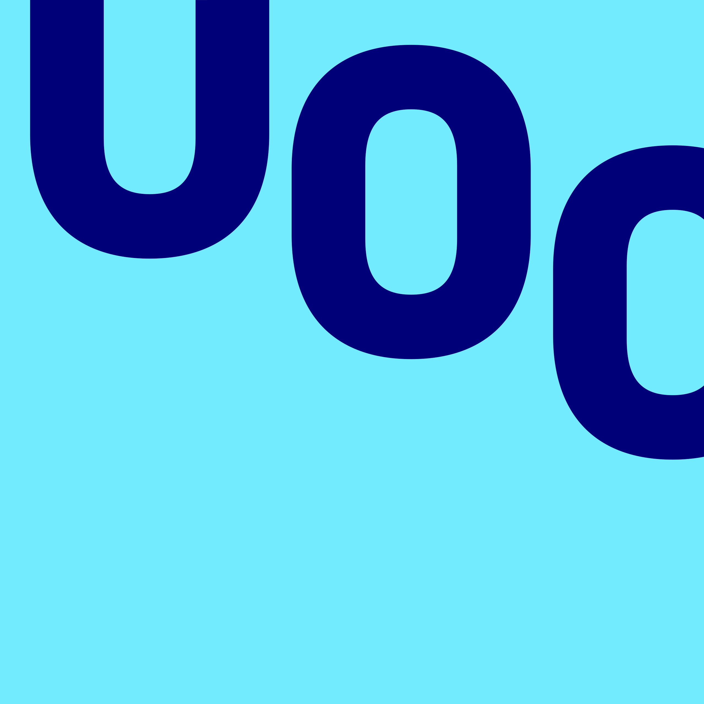

About me

Born in 1997 in Murcia, Spain. A growing interest in technology and computing soon awoke in me. After the university entrance exams, I joined a Bachelor's Degree in Computer Engineering. At this moment, I heard for the first time about Artificial Intelligence concepts like ANNs, which marked me in such a way that I decided to go deeper and learn for being able to dedicate myself professionally to this field one day.
I did it. I specialized in Machine Learning, but I needed new challenges to which apply this knowledge. It was then I focused my education towards the field of bioinformatics. I dedicated my Bachelor's Degree Thesis to the study and classification of protein domains related to neurodegenerative diseases, such as Alzheimer's or Parkinson's, using machine learning methods. It opened the door for me towards a Master's Degree in Bioinformatics and Biostatistics. After two years of reinforcing my knowledge of Python, R and molecular biology, I based the Master's Thesis on the prediction of the inhibitory activity of small molecules on the tumour angiogenesis processes.
Now, my education has finished, but the most exciting part of the journey is yet to come. I'm ready to continue learning, improving and discovering new techniques to help with the problems the world presents nowadays.
Institutions behind my education
- 
- Universitat Oberta de Catalunya
- Master's Degree
- Bioinformatics and Biostatistics
- 2021 - 2022

- University of Murcia
- Bachelor of Science
- Computer Engineering
- 2015 - 2020
- Cambridge Assessment English
- Language Certificate
- B2 First (FCE)
- 2021
- IBM
- Online Course
- Introduction to Cloud Computing
- 2022

- HarvardX
- Online Course
- Fundamentals of Neuroscience
- 2022
Other courses
My projects
Blog

No alcanza con tener solamente una página web
¿Quieres aprender cuales son las herramientas que usan las mejores marcas para generar tráfico?
Leer más ➞
¿Qué es el marketing y cómo utilizarlo?
El marketing es una de las técnicas más utilizadas por las mejores compañias. ¿Quieres saber de que se trata?
Leer más ➞